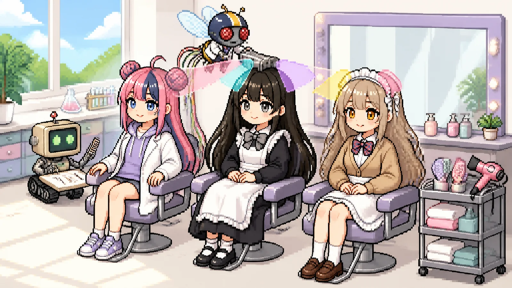
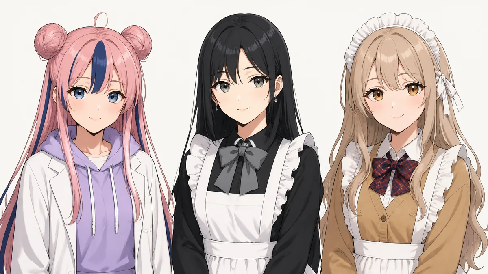
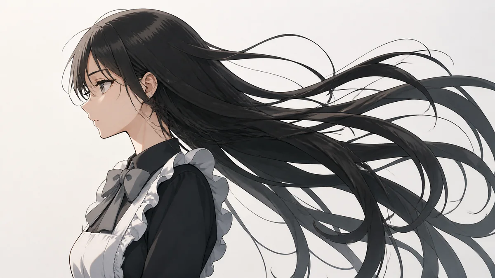
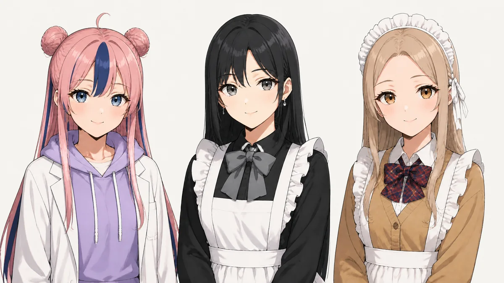
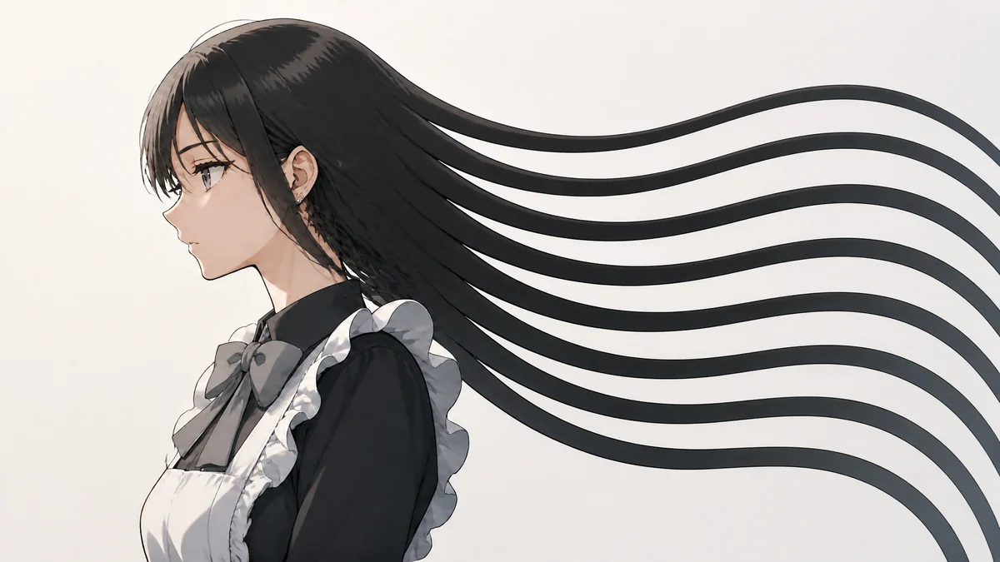
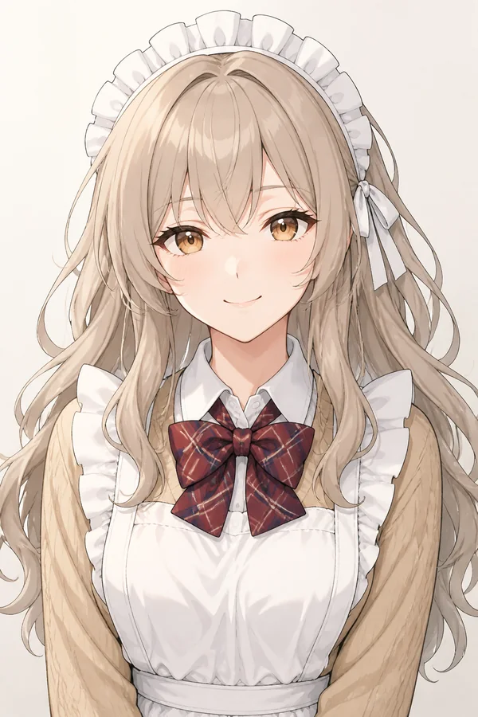
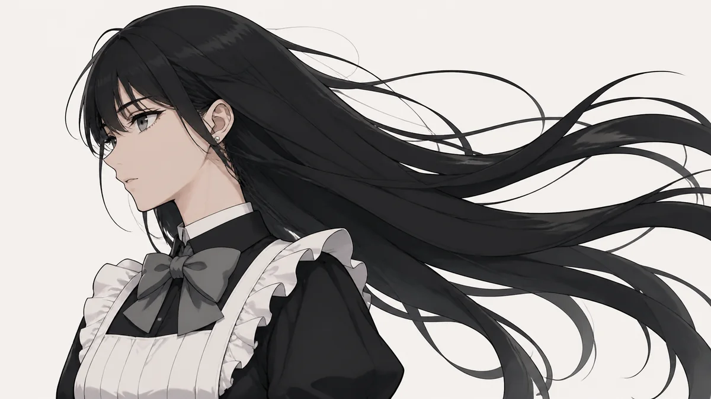

오늘의 과제

박사오늘은 머리카락이다. 하루의 번, 시아의 긴 흑발, 모아의 웨이브. 무엇부터 그릴까?

주판봇머리카락은 가닥이 생명! 한 가닥씩 천 가닥 그리겠습니다!

초파리 연구원천 가닥 그리다가 모양이 무너져. 크기 → 덩어리 → 나는 자리 → 굵기 순서야.

모아제 웨이브가 덩어리 몇 개라고요…?

이번엔 하루·시아·모아 셋이 모델입니다. 주판봇은 머리 밑그림 위에 머리카락을 딱 붙여 그리고, 가닥을 하나하나 셉니다. 초파리는 머리를 큰 덩어리 몇 개로 먼저 나눕니다.
그림 실력·코드·수식을 몰라도 됩니다. 실험을 눌러 보며 따라오세요.
머리카락 바깥선을 머리 밑그림(두개골)보다 1할 안팎 크게 잡아야 얼굴이 알맞은 크기로 보입니다

학교 수학으로 보면 — 넓이와 닮음비 — 길이가 k배면 넓이는 k² 배입니다.
| 식 조각 | 뜻 |
|---|---|
| k | 머리카락 바깥선 ÷ 머리 밑그림(예시 1.05~1.15) |
| k² | 넓이로 커지는 배수 |
| 1 ÷ k² | 머리 전체에서 얼굴이 차지하는 몫 |

같은 얼굴 사진에 머리 부분만 조금 키워 붙이면 얼굴이 작고 균형 잡혀 보입니다.
애니메이션 캐릭터 설정에서는 '머리 밑그림'과 '머리카락 실루엣'을 따로 그려, 머리카락이 두개골에서 얼마나 떨어지는지 정해 둡니다. 장면마다 머리 크기가 흔들리지 않게 하는 기준입니다.


바깥선을 머리 밑그림의 1.05~1.15배로 잡으면 얼굴이 알맞은 크기로 보입니다(이 실험의 예시).
1.0배면 얼굴이 크고, 1.2배를 넘으면 헬멧을 쓴 것처럼 부풉니다.
나이가 들어 숱이 줄어든 캐릭터를 그릴 때도 0으로 붙이지 말고 조금은 남깁니다.

AI가 그린 모아의 머리카락이 두피에 딱 붙어 얼굴이 유난히 커 보입니다. 화풍 탓일까요?
부피 부족 탓인 경우가 많습니다. 'hair with natural volume, the hair silhouette slightly larger than the skull'을 넣어 다시 요청합니다. 6부 f5와 같은 실패입니다.
앞머리·옆머리·뒷머리처럼 큰 덩어리로 나누고, 덩어리 수를 얼굴의 그려 넣은 양에 맞춥니다
머리를 묶을 때도 앞·옆·뒤를 한 움큼씩 나눠 잡습니다. 한 가닥씩 잡는 사람은 없습니다.
채색 작업에서는 머리 덩어리마다 다른 색으로 밑칠한 '덩어리 지도'를 먼저 만들고, 그 위에 그림자를 넣습니다. 덩어리 경계가 곧 그림자가 지는 곳이 되기 때문입니다.

덩어리 수를 '얼굴 정보량 + 1' 안팎으로 두면 머리와 얼굴이 한 그림으로 읽힙니다(이 실험의 예시 규칙).
덩어리 안을 다시 작은 덩어리로 나누면 같은 덩어리 수로도 더 자세해집니다. 큰 덩어리 경계를 먼저 지키는 것이 요점입니다.
땋은 머리도 덩어리 셋이 엇갈리는 것입니다. 세 줄을 긋고 가운데 줄에 Y자 꼭지점이 오도록 Y를 고르게 놓으면 땋은 머리 밑그림이 됩니다.
AI가 그린 머리카락이 가는 선으로만 가득해 덩어리가 안 보입니다. 정교해 보이니 괜찮을까요?
덩어리가 없으면 그림자가 질 곳이 없어 머리가 평평하고 산만합니다. 'hair grouped into four or five clear clumps'를 넣어 덩어리를 먼저 세우게 합니다.
정수리 한 점에서만 나는 것이 아니라, 머리선·가르마를 따라 두피 전체에서 나와 흐릅니다
머리를 감고 수건으로 말리면, 머리선 언저리의 짧은 머리가 따로 서는 게 보입니다. 머리선에서도 머리가 난다는 증거입니다.
게임 캐릭터의 머리카락 3D 모델은 두피를 덮는 면에서 머리카락 판을 겹겹이 심습니다. 한 점에서 뻗게 만들면 정수리가 뾰족하게 비어 보이기 때문입니다.

실감 나는 그림은 머리 전체에서 나게, 단순한 그림은 한 점에서 나게 해도 됩니다. 그림 성격에 맞춰 고릅니다.
앞머리는 정수리에서, 옆·뒷머리는 가르마에서 흘러내린다고 두면 흐름이 정리됩니다. 묶은 머리는 묶은 자리(매듭)를 향해 흐릅니다.
바람에 날리는 머리는 바람이 닿는 한 점을 정하고, 그 점에서 퍼지게 흐름을 그립니다. 짧은 머리는 다발 끝을 튀게, 긴 머리는 다발을 물결치게 합니다.
AI가 그린 하루의 머리가 정수리 한 점에서 뻗어 나와 머리 위에 얹힌 듯 보입니다. 단순한 화풍이니 괜찮을까요?
이 그림은 얼굴이 자세한 애니풍이라 한 점 머리가 어색합니다. 'hair growing naturally from the whole hairline and part line'을 넣어 다시 요청합니다.
다발 굵기를 모두 같게 하지 않고 섞으면 자연스럽고, 가는 한 가닥 선을 더하면 결이 삽니다
빗질한 머리도 자세히 보면 큰 다발과 작은 다발이 섞여 있고, 몇 가닥은 따로 떠 있습니다.
머리카락 채색에서는 굵은 다발에 큰 그림자를, 가는 다발에 가는 하이라이트를 넣어 굵기 차이를 색으로도 한 번 더 보여 줍니다. 땋은 머리는 엮여 들어가는 곳과 겹치는 곳에 그림자를, 말린 머리는 '빙글' 도는 안쪽에 그림자를 넣습니다.
실감 나는 그림은 굵기 차이 30~80%, 한 가닥 선 1~6개가 자연스럽습니다(이 실험의 예시 범위).
단순한 그림은 굵기 차이 40% 이하로 고르게 두는 편이 잘 어울립니다.
말린 머리는 용수철 같은 '빙글' 선을 먼저 긋고 뒤에 보조선을 더해 입체로 만들며, '빙글' 가까운 곳을 굵게 하면 입체감이 납니다. 머리끝도 살짝 말아 통일감을 줍니다.

AI가 그린 바람에 날리는 머리가 모든 다발이 같은 굵기로 같은 방향으로만 휘어 있습니다. 깔끔하니 괜찮을까요?
같은 굵기·같은 방향은 바람보다 빗으로 넘긴 머리처럼 보입니다. 'hair clumps of varied thickness spreading from one point where the wind hits, a few loose strands'를 넣습니다.
이 부에서 배운 원리를 그림 생성 AI(Genspark 등)로 직접 확인합니다. A는 이 페이지 그림을 실제로 만든 프롬프트, B는 원리를 하나 빼거나 바꾼 비교용 문장입니다.
참고 그림 내려받기: haru_anime_base · sia_anime_base · moa_anime_base · haru_sheet · sia_sheet · moa_sheet · doctor_sheet · fruitfly_sprites_6 · jupanbot_ref_genspark_v0 · pixel_style_ref_prev_cover
세 헤어스타일 모두 머리 밑그림보다 크게, 덩어리로 나뉘어 그려졌는지 봅니다.
첨부: refs/haru_anime_base.png, refs/sia_anime_base.png, refs/moa_anime_base.png
Illustration, wide 16:9. Art style: high-quality anime illustration, clean confident lineart, two-tone cel shading, natural adult proportions. Match the attached reference images exactly (face, hair, colors, accessories). All characters are adults in their twenties (the Professor is an adult man in his thirties); modest outfits exactly as described. Three front-view chest-up portraits in a row: Haru (adult lab assistant, long straight pink hair with navy streaks and a thick navy streak down the center of the bangs, two round hair buns on top, small ahoge, big blue eyes), wearing lavender hoodie with white drawstrings over a white t-shirt, open white knee-length lab coat; Sia (adult maid intern, long straight jet-black hair, no headdress, gray eyes, small silver earrings), wearing charcoal-black long-sleeved maid dress, large gray bow at the collar, long white frilled apron; Moa (adult maid intern, long ash-beige wavy hair, white frilled maid headband with a white ribbon over her LEFT ear, amber eyes), wearing camel knit cardigan over a white blouse, red and navy plaid bow tie, white frilled apron. Every hairstyle has natural volume, the hair silhouette clearly larger than the skull; hair grows from the whole hairline and the part line, grouped into four or five clear clumps with a few finer strands. Light from the upper left. Plain off-white studio background. No text, no letters, no numbers, no logos, no watermark, no revealing clothing, not childlike, no school uniform, not resembling any famous anime character.
Same image, keep the same framing. Change only: make all three hairstyles flat and tight against the skull with no volume. Still no text.

실제 결과: 모아만 가운데 가르마의 곧고 납작한 머리로 바뀌어 얼굴이 커 보이고, 하루와 시아는 거의 그대로입니다. 한 번에 셋을 바꾸라고 하면 한 사람에게만 반영될 수 있습니다. 모아의 A·B를 나란히 보면 머리 부피에 따라 얼굴 크기가 얼마나 달라 보이는지 알 수 있습니다.
바람이 닿는 한 점에서 퍼지는 흐름과 다발 굵기 섞기를 봅니다.
첨부: refs/haru_anime_base.png, refs/sia_anime_base.png, refs/moa_anime_base.png
Illustration, wide 16:9. Art style: high-quality anime illustration, clean confident lineart, two-tone cel shading, natural adult proportions. Match the attached reference images exactly (face, hair, colors, accessories). All characters are adults in their twenties (the Professor is an adult man in his thirties); modest outfits exactly as described. Side view chest-up portrait facing LEFT of Sia (adult maid intern, long straight jet-black hair, no headdress, gray eyes, small silver earrings), wearing charcoal-black long-sleeved maid dress, large gray bow at the collar, long white frilled apron, strong wind blowing from the left, her long black hair streaming to the right. The hair spreads from one point near the top of the head where the wind hits; hair clumps of varied thickness (thick and thin mixed), long clumps waving, both the front and back sides of the twisting clumps visible, a few loose single strands. Light from the upper left. Plain off-white studio background. No text, no letters, no numbers, no logos, no watermark, no revealing clothing, not childlike, no school uniform, not resembling any famous anime character.
Same image, keep the same framing. Change only: make every hair clump exactly the same thickness, all bending the same way, no loose single strands. Still no text.

실제 결과: 요청보다 크게 반영됐습니다. 머리 다발이 같은 굵기의 매끈한 띠 일곱 줄로 바뀌어 똑같은 물결로 휘어지고, 따로 노는 가닥이 사라졌습니다. 머리카락이라기보다 리본처럼 보여, 다발 굵기를 섞어야 하는 까닭이 한눈에 보이는 쌍입니다.
이 부의 원리를 내 손으로 프롬프트에 옮겨 보는 과제 5개입니다. 과제마다 목표 → 순서 → 넣을 프롬프트 → 확인할 것 → 예상 결과 → 자주 생기는 문제 순서로 적었습니다. 예상 결과 그림은 아래 프롬프트로 실제로 만든 그림입니다(아직 받지 않은 그림은 '그림 준비 중'). 요청과 다르게 나온 곳은 '실제 결과'에 그대로 적었습니다. 결과는 매번 조금씩 다르니, 그림이 똑같지 않아도 '확인할 것'이 맞으면 성공입니다.
목표4부 1·2단계의 원리(머리 밑그림보다 크게, 덩어리 네다섯 개)를 문장으로 적어 모아의 머리를 만들고, 받은 그림 위에 덩어리 경계를 그려 봅니다.
왜 이 연습인가머리카락에 대해 아무것도 적지 않으면 가는 선만 빽빽하거나 두피에 붙은 머리가 나오기 쉽습니다(6부 f5). 부피와 덩어리 수를 적으면 머리가 입체로 섭니다.
첨부할 참고 그림: refs/moa_anime_base.png, refs/moa_sheet.png — 참고 그림은 위 직접 만들어 보기에서 내려받을 수 있습니다.
Illustration, vertical 2:3. Art style: high-quality anime illustration, clean confident lineart, two-tone cel shading, natural adult proportions. Match the attached reference images exactly (face, hair, colors, accessories). All characters are adults in their twenties (the Professor is an adult man in his thirties); modest outfits exactly as described. Front view, chest-up portrait of Moa (adult maid intern, long ash-beige wavy hair, white frilled maid headband with a white ribbon over her LEFT ear, amber eyes), wearing camel knit cardigan over a white blouse, red and navy plaid bow tie, white frilled apron, soft smile. Hair (most important): natural volume, the hair silhouette clearly larger than the skull; the hair grouped into four or five big clear clumps (bangs, two side clumps, back) with a few finer strands; the hair grows from the whole hairline and the part line, not from one point. Keep the white frilled headband and the ribbon over her LEFT ear. Light from the upper left. Plain off-white studio background. No text, no letters, no numbers, no logos, no watermark, no revealing clothing, not childlike, no school uniform, not resembling any famous anime character.

실제 결과: 성공. 머리 바깥선이 두개골보다 한 둘레 크고, 앞머리·옆머리·뒷머리 덩어리로 나뉘어 가르마에서 흘러내립니다. 덩어리 경계는 받은 그림 위에 직접 그려 세어 보세요.
| 문제 | 이렇게 고칩니다 |
|---|---|
| 머리가 너무 부풀었다 | 'slightly larger than the skull'로 'clearly'를 'slightly'로 바꿉니다. |
| 가는 선만 빽빽하다 | 'four or five big clear clumps'를 맨 앞으로 옮기고 'fewer fine strands'를 덧붙입니다. |
| 머리띠가 사라졌다 | 'keep the white frilled headband'를 프롬프트 맨 앞에 다시 적습니다. |
더 해 보기같은 문장에서 덩어리 수를 'two or three'와 'seven or eight'로 바꿔 두 장을 더 만들고, 얼굴과 어울리는 덩어리 수를 비교해 보세요.
목표4부 3·4단계의 원리(바람이 닿는 한 점에서 퍼짐, 다발 굵기 섞기)를 문장으로 적어 바람에 날리는 시아의 긴 흑발을 만듭니다.
왜 이 연습인가'hair blowing in the wind'만 쓰면 모든 다발이 같은 방향·같은 굵기로 휘어 빗질한 무늬처럼 됩니다. 바람이 닿는 점과 굵기 섞기를 적으면 흐름이 살아납니다.
첨부할 참고 그림: refs/sia_anime_base.png, refs/sia_sheet.png — 참고 그림은 위 직접 만들어 보기에서 내려받을 수 있습니다.
Illustration, wide 16:9. Art style: high-quality anime illustration, clean confident lineart, two-tone cel shading, natural adult proportions. Match the attached reference images exactly (face, hair, colors, accessories). All characters are adults in their twenties (the Professor is an adult man in his thirties); modest outfits exactly as described. Side view chest-up portrait facing LEFT of Sia (adult maid intern, long straight jet-black hair, no headdress, gray eyes, small silver earrings), wearing charcoal-black long-sleeved maid dress, large gray bow at the collar, long white frilled apron, a strong wind blowing from the left side of the image. Hair in the wind (most important): her long black hair streams to the right, spreading from one point near the top of her head where the wind hits; hair clumps of varied thickness, thick and thin mixed; long clumps wave, showing both their front and back sides; a few loose single strands. Light from the upper left. Plain off-white studio background. No text, no letters, no numbers, no logos, no watermark, no revealing clothing, not childlike, no school uniform, not resembling any famous anime character.

실제 결과: 성공. 뒤통수 한 곳에서 머리가 퍼져 오른쪽으로 날리고, 굵고 가는 다발과 따로 노는 가닥이 섞였습니다. 다발 앞면·뒷면의 밝기 차이는 약합니다.
| 문제 | 이렇게 고칩니다 |
|---|---|
| 시아가 오른쪽을 본다 | 'her nose points toward the LEFT edge; the back of her head is on the RIGHT side'처럼 화면 위치로 적습니다(03 얼굴 편의 실제 경험). |
| 다발이 모두 같은 굵기다 | 'very different clump thicknesses'로 과장합니다. |
| 머리가 얼굴을 다 가린다 | 'the wind blows the hair away from her face'를 덧붙입니다. |
더 해 보기같은 문장에서 머리 길이만 'short hair'로 바꿔, 짧은 머리는 다발 끝이 튀는지 비교해 보세요.
목표4부 3단계의 원리(머리는 두피 전체에서 나고 가르마·정수리에서 흐른다)를 문장으로 적어, 위에서 내려다본 하루의 머리 흐름을 만듭니다.
왜 이 연습인가정면 그림에서는 머리가 나는 자리가 잘 보이지 않아, 도구가 앞머리만 그리고 정수리를 비워 두기도 합니다. 위에서 본 구도를 고르고 가르마부터 흐름을 적으면 흐름을 확인하기 쉽습니다.
첨부할 참고 그림: refs/haru_anime_base.png, refs/haru_sheet.png — 참고 그림은 위 직접 만들어 보기에서 내려받을 수 있습니다.
Illustration, vertical 2:3. Art style: high-quality anime illustration, clean confident lineart, two-tone cel shading, natural adult proportions. Match the attached reference images exactly (face, hair, colors, accessories). All characters are adults in their twenties (the Professor is an adult man in his thirties); modest outfits exactly as described. High-angle view from above and slightly behind Haru (adult lab assistant, long straight pink hair with navy streaks and a thick navy streak down the center of the bangs, two round hair buns on top, small ahoge, big blue eyes), wearing lavender hoodie with white drawstrings over a white t-shirt, open white knee-length lab coat, head and shoulders, she looks down at a notebook in her hands. Hair flow (most important): a clear center parting runs from the forehead to the crown; the hair grows from the WHOLE scalp and every clump starts at the parting or the crown, wraps around the two round hair buns and flows down the back; the navy streaks follow the same flow. Light from the upper left. Plain off-white studio background. No text, no letters, no numbers, no logos, no watermark, no revealing clothing, not childlike, no school uniform, not resembling any famous anime character.
| 문제 | 이렇게 고칩니다 |
|---|---|
| 정면 얼굴이 나왔다 | 'we see mostly the top of her head'를 첫 줄에 덧붙입니다. |
| 가르마가 안 보인다 | 'a clearly visible straight parting line'으로 과장합니다. |
| 번이 머리에서 떠 있다 | 'the buns are made of her own hair, wrapped from the flow'를 덧붙입니다. |
더 해 보기같은 문장의 가르마를 'side parting on her left'로 바꿔 새 대화에서 만들고, 흐름이 어떻게 달라지는지 비교해 보세요.
목표4부 1·2단계의 원리(머리 밑그림보다 한 둘레 크게, 덩어리 네다섯 개)를 짧은 뾰족 머리의 박사에게 적용합니다.
왜 이 연습인가짧은 머리는 부피가 작다고 여겨 두피에 붙여 그리기 쉽습니다. 짧아도 머리카락에는 두께가 있어 바깥선이 두개골보다 큽니다. 뾰족한 끝을 몇 개의 큰 덩어리로 묶어 적어 줍니다.
첨부할 참고 그림: refs/doctor_sheet.png — 참고 그림은 위 직접 만들어 보기에서 내려받을 수 있습니다.
Illustration, vertical 2:3. Art style: high-quality anime illustration, clean confident lineart, two-tone cel shading, natural adult proportions. Match the attached reference images exactly (face, hair, colors, accessories). All characters are adults in their twenties (the Professor is an adult man in his thirties); modest outfits exactly as described. Three-quarter view chest-up portrait of the Professor (adult male scientist in his thirties, dark charcoal spiky hair with a white streak at the front, very thick black eyebrows, teal rectangular glasses), wearing white lab coat over a black vest, white shirt and black tie, confident smile. Hair volume and clumps (most important): the short spiky hair stands clearly above and around the skull, the hair silhouette about 10% larger than the head; the spikes are grouped into four or five large clumps (front with the white streak, top, two sides, back), each clump split into a few smaller spikes. Light from the upper left. Plain off-white studio background. No text, no letters, no numbers, no logos, no watermark, no revealing clothing, not childlike, no school uniform, not resembling any famous anime character.
| 문제 | 이렇게 고칩니다 |
|---|---|
| 가시가 너무 많아 산만하다 | 'only four or five large clumps, few small spikes'로 줄입니다. |
| 머리가 두피에 붙었다 | 'tall voluminous hair'를 덧붙입니다. |
| 흰 줄이 사라졌다 | 'white streak at the front, as in the reference'를 맨 앞에 적습니다. |
더 해 보기덩어리 수를 'ten small clumps'로 바꿔 새 대화에서 만들고, 얼굴 정보량에 비해 머리가 산만해지는지 4부 2단계 실험의 값(정보량 + 1)과 비교해 보세요.
목표4부 3단계의 흐름 원리를 묶은 머리에 적용해, 모아의 머리가 묶는 자리 한 곳으로 모여드는지 봅니다.
왜 이 연습인가머리를 묶으면 흐름의 끝점이 생깁니다. 이 점을 적지 않으면 도구는 묶은 자리와 상관없이 머리를 흘려, 묶은 머리가 붙여 놓은 듯 보입니다. 묶는 자리를 낮게 정하는 것은 6부의 나이 쏠림을 막는 데도 도움이 됩니다.
첨부할 참고 그림: refs/moa_anime_base.png, refs/moa_sheet.png — 참고 그림은 위 직접 만들어 보기에서 내려받을 수 있습니다.
Illustration, vertical 2:3. Art style: high-quality anime illustration, clean confident lineart, two-tone cel shading, natural adult proportions. Match the attached reference images exactly (face, hair, colors, accessories). All characters are adults in their twenties (the Professor is an adult man in his thirties); modest outfits exactly as described. Three-quarter back view chest-up portrait of Moa (adult maid intern, long ash-beige wavy hair, white frilled maid headband with a white ribbon over her LEFT ear, amber eyes), wearing camel knit cardigan over a white blouse, red and navy plaid bow tie, white frilled apron, looking back over her shoulder with a soft smile; her hair is gathered in a LOW loose ponytail at the nape of the neck, tied with a plain white ribbon; the frilled headband stays on. Hair flow (most important): every clump from the hairline, the parting and the crown flows smoothly toward the single tie point at the nape, then fans out in soft waves below it; a few short loose strands near the ears. Light from the upper left. Plain off-white studio background. No text, no letters, no numbers, no logos, no watermark, no revealing clothing, not childlike, no school uniform, not resembling any famous anime character.
| 문제 | 이렇게 고칩니다 |
|---|---|
| 높이 묶은 머리가 나왔다 | 'LOW ponytail at the nape of the neck, not high'로 과장합니다. 높이 묶으면 어려 보이기 쉽습니다. |
| 다발이 묶은 자리를 지나쳐 흐른다 | 'all hair converges to the tie point'를 덧붙입니다. |
| 왼쪽 귀 리본이 사라졌다 | 묶은 리본과 헷갈린 경우입니다. 'keep the small white ribbon over her LEFT ear as well'을 덧붙입니다. |
더 해 보기묶는 자리를 'at the side of the neck'으로 옮겨 새 대화에서 만들고, 흐름의 끝점이 따라 옮겨 가는지 보세요.

| 항목 | 주판봇 | 초파리 |
|---|---|---|
| 닮음(세 사람다운가) | 5 | 8 |
| 원리(부피·덩어리·나는 자리) | 2 | 9 |
| 자연스러움 | 3 | 8 |
| 합계 | 10 | 25 |


점수는 이야기 속 예시입니다. 실제 그림을 평가한 값이 아닙니다.
| 주제 | 한 줄 | 작업에서는 |
|---|---|---|
| 1단계 부피 | 바깥선 = 머리 밑그림 × 1.05~1.15, 넓이는 k²배 | 두피에 붙이지 않기 |
| 2단계 덩어리 | 앞·옆·뒤로 나누고, 덩어리 수 ≈ 얼굴 정보량 + 1 | 덩어리 지도를 먼저 |
| 3단계 나는 자리 | 머리 전체에서 나고 가르마·정수리에서 흐름 | 단순한 그림만 한 점 허용 |
| 4단계 굵기 | 굵기 차이 30~80%, 가는 한 가닥 몇 개 | 땋은 머리·말린 머리도 덩어리로 |

이 페이지에 나온 개념·방법·비유·쓰임을 모았습니다. 검색하고, "설명 보러 가기"로 본문에 돌아갑니다.
지식 색인을 출처와 함께 파일로 내려받습니다. 서지 관리는 BibTeX·RIS, 온톨로지 편집은 Turtle, 그래프 도구는 CSV, 여러 페이지 합치기는 kg.json입니다.